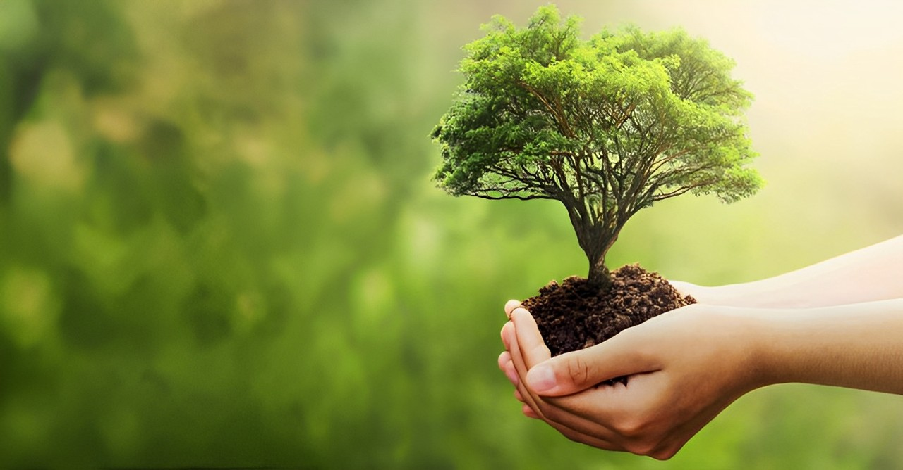

Uma empresa que trabalha com responsabilidade social
COMUNIDADE
Como bons vizinhos, sempre que podemos, nos envolvemos em esforços locais para unir as pessoas e criar uma mudança positiva.
MEIO AMBIENTE
Estamos buscando formas de minimizar o impacto ambiental de nossos produtos, lidar com as mudanças ambientais e inspirar outros a fazerem o mesmo.
Nosso foco é uma startup brasileira na área de cafeteria: Dream House Coffee irá permitir aos usuários plantar árvores virtuais online, representando as árvores frutíferas reais que a Dream House Coffee planta em pequenas propriedades rurais no Brasil.
É um pouco como o jogo Farmville, do Facebook, mas muito mais significativa. No caso da Dream House Coffee, os usuários assistem suas árvores crescerem online e podem comprar assinaturas que fornecem frutas,
provenientes dessas árvores ou de fazendas orgânicas locais, para suas casas e escritórios.
